Documentação do Cliente - eProcurement
Este usuário tem acesso aos mesmos itens que o usuário “Empresa”, porém com a restrição de visualizar dados relacionados a ele e a empresas ativas apenas.
Além dos itens citados acima o usuário comprador tem acesso ao painel de análise e a criação de OCs.
O painel de análise exibirá as informações da cotação agrupadas por fornecedor de acordo com o Best Price de cada ordem de compra possibilitando simulações com ou sem impostos, conforme tela abaixo:
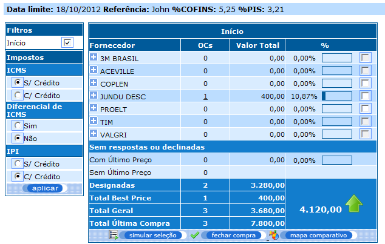Desta forma, temos um painel indicando o valor total e quantidade total de OCs por fornecedor, considerando o Best Price das OCs respondidas.
O botão mais próximo à quantidade de OCs expande a linha exibindo mais detalhes das OCs referente ao fornecedor. Com isso o usuário consegue ver qual a quantidade total de OCs respondidas daquele fornecedor, quantas OCs não foram respondidas, quantas OCs têm último preço e quantas não tem.
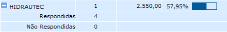Para cada fornecedor também terá uma representação gráfica da participação daquele fornecedor com relação ao valor total de OCs e o valor total da cotação.
Cada round conterá informações sobre a quantidade de OCs que não foram respondidas ou declinadas. Essas informações serão exibidas de duas formas:
1 - Com último preço - OCs que contém último preço.
2 - Sem último preço - OCs que não contém último preço.
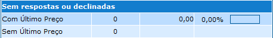Total designado: valor total e quantidade total de OCs já designadas no painel de cada rodada.
Total best price: valor total e quantidade total de OCs considerando Best Price.
Total geral: valor total e quantidade total de OCs considerando as OCs de best price + OCs que não foram respondidas mas tem último preço.
Total última compra: valor total e quantidade total de OCs que têm valor de última compra.
Na área dos totais, é exibido o valor e uma imagem indicando o ganho ou a perda referente àquela rodada. Esse valor é a diferença entre o Total geral e o total de última compra.
Ganho:
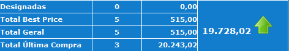Perda:
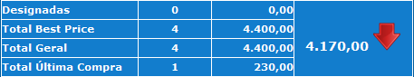Para visualizar os detalhes das OCs de cada fornecedor é só clicar em cima da quantidade de OCs do fornecedor, e abrirá uma aba com o nome OCs [Nome do Fornecedor].
Nesta aba abrirá as informações das OCs (Best Price) desse fornecedor. Ver item “Detalhes das OCs”.
Haverá para cada round uma área contendo 3 botões que terão as seguintes finalidades:
1 – Simular: Este botão oferece ao comprador a possibilidade de fazer a simulação do Best price selecionando alguns fornecedores que ele gostaria de fechar a compra. Desta forma ele conseguirá ver um cenário do Best price referente aos fornecedores que ele selecionou para simulação. Ao clicar no botão, abrirá um painel ao lado do painel da rodada com as informações da simulação.
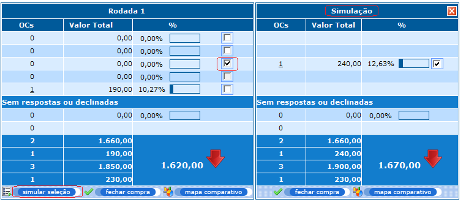2 – Mapa comparativo: Este botão oferece ao comprador a possibilidade de carregar o mapa comparativo com as OCs dos fornecedores selecionados. Com isso ele conseguirá comparar os valores somente das OCs dos fornecedores que ele está focando a compra. Ao clicar no botão o comprador será direcionado para a aba do mapa comparativo com as informações de acordo com os fornecedores selecionados na rodada.
O mapa comparativo tem como objetivo a visualização clara e objetiva dos dados da cotação, fazendo comparações entre os fornecedores e compras anteriores, utilizando de disposição tabular, como descrito abaixo:
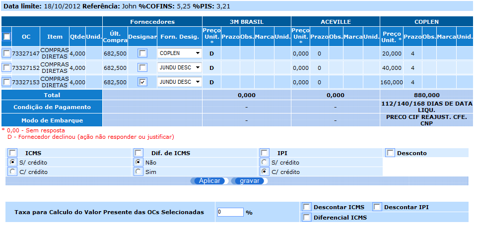Como se pode notar na imagem, nesta tela também é possível designar um fornecedor para o item, basta selecionar o campo “Designar” e será salvo no item o fornecedor que selecionado no campo “Forn. Desig.”.
A partir da versão 341.1.0 é possível selecionar as informações para exibição dentro do mapa comparativo, para isso o comprador deve selecionar as informações na tabela exibição acima do mapa comparativo conforme imagem abaixo.
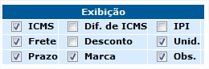Além das opções relativas a impostos também poderem ser alteradas e simuladas na tela.
Ao final é possível visualizar o total do pedido para cada fornecedor:
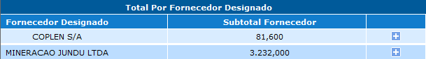3 – Fechar compra (designar): Este botão oferece a possibilidade de designar as OCs Best price dos fornecedores selecionados. Ao clicar no botão, as OCs serão designadas para seus fornecedores de acordo com o best price. Será mostrada uma tela com as OCs designadas para cada fornecedor. Ao voltar no painel de decisão, já serão exibidas as informações considerando as OCs designadas. Esse botão só será exibido no painel da última rodada gerada. Rodadas passadas não terão esse botão.
4 – Simulação de proposta: Este botão oferece a possibilidade de geração de uma simulação com os valores oferecidos pelos fornecedores, para que o usuário possa verificar o valor total da proposta.
Para executar a ação é necessário selecionar os valores unitários adicionados pelos fornecedores, para isso dê um clique no valor do fornecedor desejado para cada ordem de compra conforme a figura abaixo.
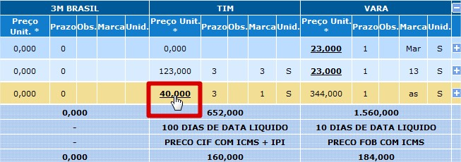Após selecionar os valores para cada ordem de compra clique no botão “simular proposta” conforme imagem abaixo.
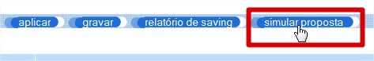Ao executar a ação do botão, será gerada a simulação da proposta e salva para que possa ser visualizada posteriormente, as informações geradas ficarão embaixo de modo de embarque, os totais gerados são mostrados por fornecedor em sua respectiva coluna e o total da proposta na primeira coluna, conforme a imagem abaixo.
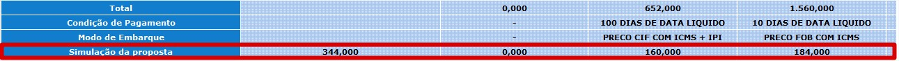Haverá uma área de filtro, onde mostrará as rodadas. Ao marcar ou desmarcar o a opção da rodada na área de filtro, o painel da rodada em questão será exibido ou ocultado conforme a seleção.
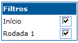Os painéis das rodadas e simulação podem ser trocados de posição para fazer uma comparação entre rodadas caso seja necessário. Para isso, será necessário clicar e arrastar o painel que deseja mudar de posição.
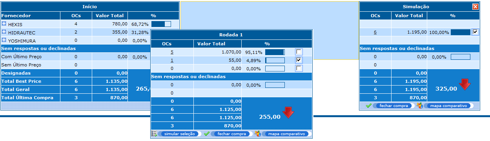Esta funcionalidade ajuda o comprador a visualizar melhor e comparar as informações de forma fácil.
Para visualizar os detalhes das OCs de cada fornecedor, basta clicar na quantidade de OCs do fornecedor, que abrirá uma aba com os detalhes das OCs que aquele fornecedor tem melhor preço.
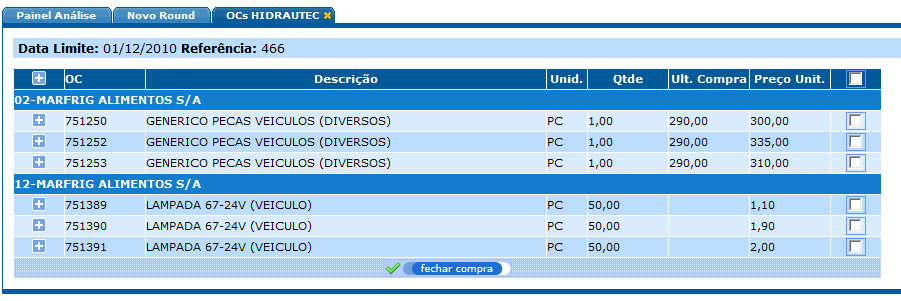Nesta tela, o comprador tem mais informações como: Preço da resposta do fornecedor, Valor da Última Compra, Quantidade e Unid. de medida.
O comprador tem a opção de designar as OCs que estão com o valor de acordo com o esperado. Para efetuar a designação, basta selecionar as OCs e clicar no botão “fechar compra”.
Para gerar uma nova rodada a cotação deve estar vencida.
O comprador precisa selecionar quais OCs ele quer que participe dessa nova rodada. Para isso ele terá que clicar em cima das quantidades de OCs dos fornecedores, que abrirá em uma aba (Detalhes da OC).
Nesta aba terá as informações das OCs e a opção de selecionar quais OCs participarão da rodada.
O comprador poderá adicionar as OCs que ele quer uma a uma, ou adicionar todas as OCs através do ícone que está no cabeçalho, conforme imagem abaixo:
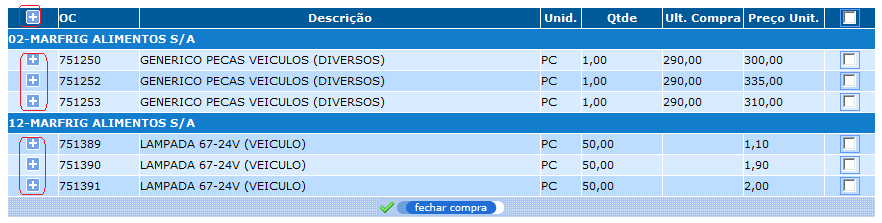Ao clicar nas opções para adicionar as OCs na rodada, a aba Nova Rodada será atualizada com as OCs que foram selecionadas durante o processo que o comprador faz de análise da Cotação/OCs.
Após ter selecionado as OCs que deseja gerar uma nova rodada, é só acessar a aba ‘Novo Round’ e finalizar o processo da seguinte forma:
1 – Selecionar os fornecedores que irão participar dessa rodada.
2 – Preencher o campo “Valor Sugerido” de cada OC, informando qual o valor que ele deseja que o fornecedor se aproxime. Este campo já vem preenchido com o valor da última compra.
3 – Informar a data limite da rodada.
4 – Clicar em gerar rodada.
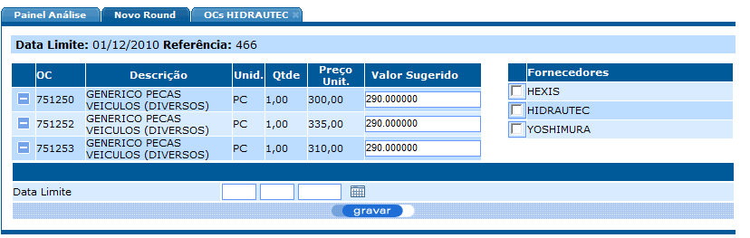Além disso, o comprador terá a opção de remover uma ou mais OCs da rodada, antes de gerar. Cada OC terá uma opção de remover daquela rodada.
Os fornecedores serão notificados via e-mail sobre a rodada de negociação e poderão responder da cotação, apenas as OCs que estão na rodada. Ao acessar a tela de resposta da cotação, será apresentado ao fornecedor o preço sugerido pelo comprador em cada OC da rodada. O fornecedor poderá ofertar o preço sugerido ou qualquer outro valor.
Esta opção é acessada pelo filtro de consulta de cotações, no botão de “incluir” como usuário “Comprador”.
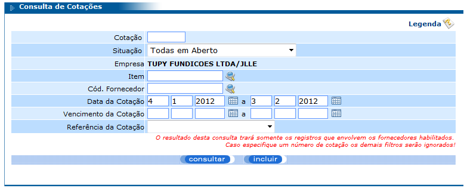A tela a seguir será apresentada para o preenchimento das informações.
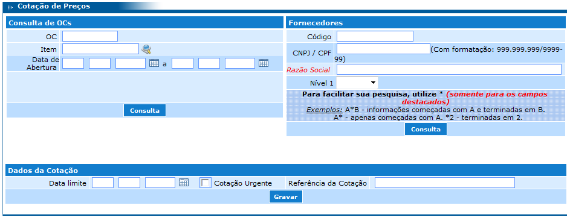A partir da versão 341.1.0, é possível adicionar anexos e observações para as ordens de compra, para isso ao adicionar uma OC clique no ícone de anexo caso queira anexar um arquivo com tamanho de até 5 mb, e para adicionar uma observação clique no ícone de observação para que a modal com o campo para inserção da observação seja inserida, conforme a imagem abaixo.
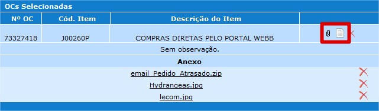